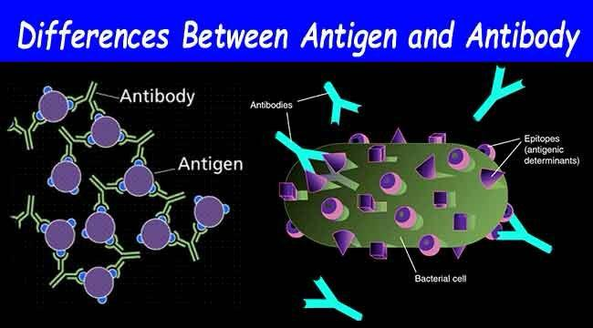
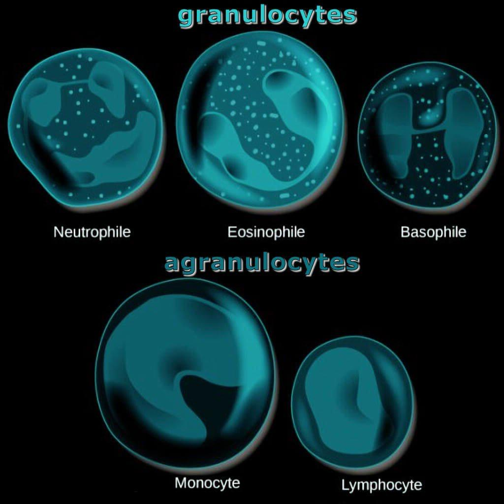

Introduction to the Immune System:
- Purpose: to protect the body from infections, diseases, and various pathogens - ensuring the body’s health and well being
- Types: innate and adaptive:
- Innate immunity: first line of defense, rapid protection, not specific, (e.g. skin, mucus, inflammatory response
- Adaptive immunity: acquired over time, specific and targeted to respond to certain targets, involves memory using lymphocytes - allowing for a seamless and stronger response with re-exposure.
- Passive immunity: receiving antibodies from an external source, rather than producing them yourself (e.g. babies receive antibodies from their mother’s placenta and initial breast milk, called colostrum)
Basic Immunity:
- The body’s ability to distinguish between self and non-self (self being cells in an organism’s body and non-self being foreign substances)
- Autoimmunity is the body’s reaction to self molecules (e.g. Type 1 diabetes is an autoimmune condition where the body attacks its own beta cells of the pancreas, stopping insulin production)
Antigens → foreign substances triggering an immune response
Antibodies → produced by the body to target and neutralize these antigens

Types of Immune Cells:
- Lymphocytes (white blood cells) → found in the blood and lymph; targeted and specific
Types of lymphocytes:
- T cells → produce antibodies, marking pathogens for destruction
CD4+ (Helper): Activate B cells & cytotoxic T cells
CD8+ (Killer): Kill infected cells
Memory T Cells: Long term immunity
- B cells → directly kill infected cells
Become Plasma Cells: Make antibodies
Memory B Cells: For long term immunity
- Macrophages → function in phagocytosis (engulfing pathogens); part of the innate immune system
- T cells: T cells do not produce antibodies; B cells do. T cells help coordinate the immune response (Helper T cells) or kill infected cells (Cytotoxic/Killer T cells).
- B cells: Produce antibodies (not directly kill infected cells). Plasma cells (derived from B cells) secrete large amounts of antibodies.
- Natural Killer (NK) cells: Innate lymphocytes that kill virus-infected or cancerous cells.
Major organs of the Immune System:
Bone marrow:
- The bone marrow is a soft jelly-like tissue found inside the bones.
- The cells of the immune system are created in the bone marrow from stem cells.
Thymus:
- The thymus is a major gland located in the middle of the chest between the lungs.
- A certain type of white blood cells (T Lymphocytes) mature in the thymus.
- It is responsible for keeping the immune system working properly.
- It prevents human autoimmune diseases through induction of apoptosis to autoreactive T cells. Any disturbance in this process can lead to the escape of autoreactive T cells that may trigger an autoimmune disease.
- It’s constantly growing in size and reaches its peak during childhood. After puberty it gradually shrinks and becomes less active.
Lymph nodes:
- Tissues full of immune cells.
- Located strategically everywhere throughout the body.
- Some are in the neck, the armpit, the genital region, digestive tract etc.
- Connected with each other through a large network of blood and lymphatic vessels, which have valves.
Spleen:
- Contains a large number of immune system cells.
- About 25% of the blood that comes from the heart flows through the spleen on every beat.
- As blood circulates through the spleen, it is filtered to detect pathogens.
- If pathogens are detected, immune system cells are activated and increase in number.
Skin:
- Serves as an important physical barrier from many of the disease-causing agents that we come into contact with on a daily basis.
Lines of Defence:
- First Line of Defence (innate, non-specific barriers): Skin, mucous membranes, tears, saliva, stomach acid
- Second Line of Defence (innate, internal): Phagocytes (macrophages, neutrophils), inflammation, fever, complement system, NK cells
- Third Line of Defence (adaptive/specific): B cells (antibody-mediated/humoral immunity); T cells (cell-mediated immunity)
The white blood cells (leukocytes) are divided into:
Granulocytes (the granules contain proteins):
- Neutrophils: Most common, phagocytic, fight bacteria
- Eosinophils: Target parasites, allergies. Release MBP, ECP, EPX, EDN
- Basophils: Release histamine and heparin
- Mast cells: Similar to basophils but live in tissues

Agranulocytes:
- Lymphocytes: Natural Killer Cells: Kill viruses and cancer cells
- Monocytes: Become macrophages (clear debris) and dendritic cells (activate B & T cells)
Complement System:
- Proteins from the liver that aid antibodies/phagocytes
- 3 pathways: Classical (antibody), MB-lectin (macrophage), Alternative (amplification loop - positive feedback to initiate and exacerbate inflammation)
Steps The Body Takes when a Foreign Substance is Introduced:
- Entry/Recognition: Occurs when a pathogen breaks through the first line of defense (skin/mucous membranes). The body then recognizes the pathogen as “non-self” by identifying the antigens on the pathogen’s surface.
- Innate Immune Response: Phagocytes (e.g., macrophages, neutrophils) rapidly engulf and destroy invaders. Dendritic cells present pieces of the pathogen (antigens) to lymphocytes to begin developing memory for the infection. An inflammatory response begins, causing the area to become red, warm, swollen, and painful as more immune cells accumulate at the damaged site. Complement proteins are also activated, which help to kill pathogens and signal for more immune cells.
- Activation of Adaptive Immunity: Antigen-presenting cells (like dendritic cells and macrophages) show pathogen antigens to Helper T cells in lymph nodes. Helper T cells also activate B cells and Cytotoxic T cells. B cells mature into plasma cells, producing antibodies specific to the pathogen. Cytotoxic (Killer) T cells directly kill infected cells.
- Elimination: Antibodies neutralize pathogens, marking them for destruction, cytotoxic T cells destroy infected cells, and phagocytes clean up debris and dead pathogens.
- Memory: Memory B cells and Memory T cells are formed and are kept in the body, allowing a more efficient response if the same pathogen is encountered again (immunity).
Written by Josephine Ankomah